Open this document to read its complete text, figures and examples here.
Coupling is the central experiment
Separate SPH, MPM and Eulerian passes exchange impulses and heat in a shared editable scene.
A comprehensive 2D physical simulation laboratory coupling MPM, SPH and Eulerian fluids, with tearing, heating, anisotropic material structure, baking, explosions, magnetism and living materials that can grow. It's called 2.5D because I added approximate depth support to keep porous materials connected: a tunnel through a flat 2D slice can split it in two, while material outside that slice can still hold it together.
Explore connections Brochure · 18 chapters ↓
Follow an intervention through the quantities it changes: motion, heat, material state and the fields that connect them.
Geometry, particle family and constitutive parameters define the experiment.
SPH neighborhoods and MPM particle–grid transfers update fluids and deformable solids.
Contact impulses, thermal mixtures and Eulerian air connect otherwise separate solvers.
Damage, phase, magnetization and living fields alter the material's response.
Compare models and diagnostic fields beside the rendered result.
Separate SPH, MPM and Eulerian passes exchange impulses and heat in a shared editable scene.
An anisotropic damage path adds structural tensors, retained driving history and nonlocal damage regularization.
Fire, magnetic response and artificial-life experiments expose the fields behind the rendered behavior.
Related techniques belong to one family. Follow a family into the interface, recorded results and mathematical detail.
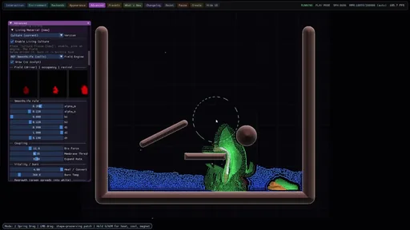
01 / 06Material particles retain deformation and history while a transfer grid mediates motion.
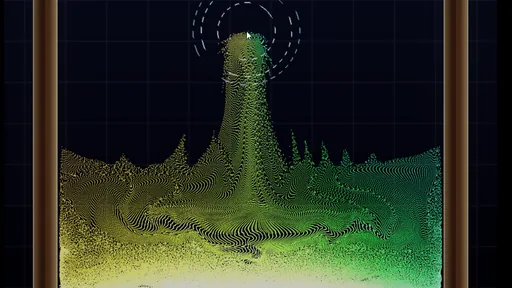
02 / 06Liquid pressure and interfaces arise from weighted local neighborhoods.
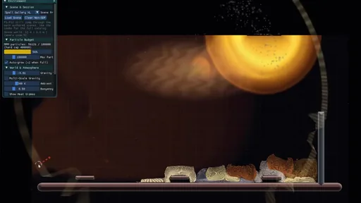
03 / 06A fixed grid carries air motion, temperature, smoke and reactive fields.
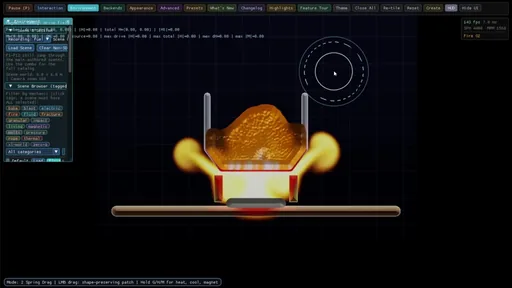
04 / 06Follow the momentum and heat exchanged between solvers.
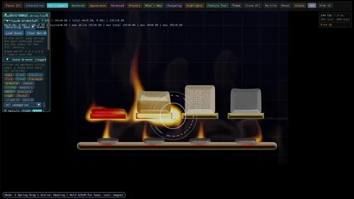
05 / 06The same mechanics grows into direction-aware, thermal and magnetic material experiments.
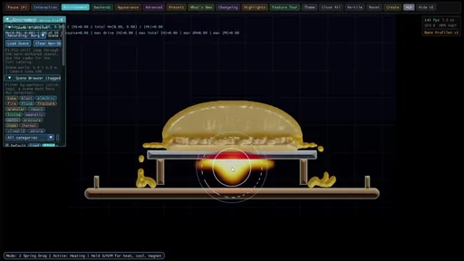
06 / 06The UI makes the interfaces part of the experiment.
Three simulation methods share one scene: the material point method (MPM) carries deforming solids and their history, smoothed particle hydrodynamics (SPH) handles liquids, and a fixed Eulerian grid transports air, smoke and heat. Coupling them makes new experiments possible: a jet pushes a deformable body, a hot wall changes a material, a grain direction steers damage, and a magnetic field shapes a fluid.
Scan the descriptions and figures, or open a layer for the implementation and mathematical detail.
Crucible2.5D is a material laboratory built around three simulation methods: MLS/APIC MPM, weakly compressible SPH, and Eulerian fluid flow. Its mechanics remain planar; the 2.5D name reflects selected thickness and support approximations. The point is to combine their strengths in scenes that can be edited and inspected while they run: liquid jets, tearing solids, heat-driven processing, ferrofluid, fire and blast.
I built Crucible2.5D as a 2D testbed for advanced simulation techniques I encountered in SIGGRAPH papers and demonstrations, and wanted to understand by implementing and combining them. Keeping the world planar makes local interventions, fields and failures easier to see, and leaves more of an interactive frame budget for material state and solver coupling. Particle count, grid resolution, field iterations and stiffness-dependent substeps still determine what fits that budget.
The recordings below show desktop sessions: 35 complete takes, just over eighteen minutes in all. Start with living material growing over a support, then compare food surfaces and follow heat, tearing, magnetism and blast in their own sections. Alternate takes are grouped under expandable headings; playback stays at its original speed with audio available.
The laboratory overview, finished food surfaces and representation comparison introduce the whole project. MPM, SPH and Eulerian flow then have their own sections. The coupling section traces what the solvers exchange, where each quantity is stored, and when it is applied. Later material extensions build on that foundation.
The native application combines C++ orchestration, OpenGL compute passes and an interactive material editor. A scene can contain deformable or flowing particles, surrounding air, analytic terrain, temperature, damage and external fields. Not every combination is a validated multiphysics model. Some are deliberate visual experiments, and others have specific numerical support that can be traced through the pipeline viewer and source.
The project grew through hands-on implementation: write a material law, build a revealing scene, inspect a failure, then retain an alternative when it answers a different question. Some changes repair a specific exchange or scale error; others trade physical scope for a more expressive interactive model. Keeping those branches visible makes the engineering history part of the experiment.
A pore that crosses a narrow ligament in a planar body can cut its only load path. In a three-dimensional porous solid, material may still connect around that opening through depth. Increasing a 2D stiffness parameter cannot recreate a missing connection, so a crumb-like sample may separate or slump differently even when its appearance resembles a 3D porous material.
Magnetic peaks have a similar dimensional boundary. A pointed profile in this plane does not establish the curvature, spacing or connectivity of a three-dimensional spike array. The visible height is simulated in-plane; the shaded depth is presentation. The magnetic model also includes explicit surface traction and corrugation seeding.
Thickness, occupancy and support controls explore selected missing effects with affordable approximations. They remain useful comparative models inside the testbed, with their assumptions exposed; a full volumetric solid or ferrofluid would require a different spatial representation and a larger computational budget.
The thermal chapter makes this visible in four native recordings: excessive breakup, larger cracked pieces, cohesive heated bodies with 2.5D support, and variants of that extra support.
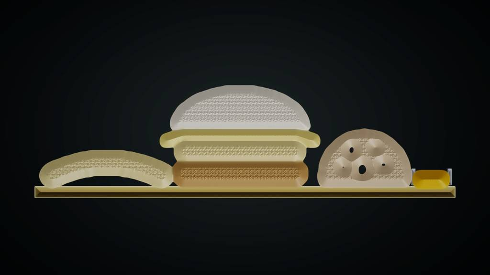
Original density surface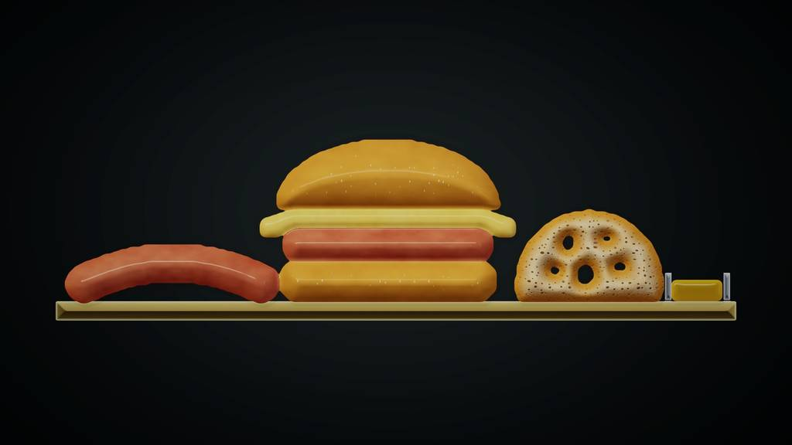
Refined Food skinFood skin is the refined presentation of the same simulated material. The original density and particle views expose structure for inspection; the finished surface adds smooth casing, golden bun crust, porous crumb, cheese, oil and a distinct interior at torn edges. The comparison below shows what this finishing layer contributes. Every capture comes from the native application.
Material coordinates keep the small texture attached as an object stretches. Comparing the original shell with newly exposed boundaries gives a torn edge a different interior appearance. Temperature and stored cooking history drive the live look; separate cooking, char and pore-detail controls let a recording explore appearance without changing the solver.
Compare the diagnostic surface with the finished appearance by dragging the divider. Both captures use the same paused geometry, temperature and material history. Rounded lighting supplies the impression of depth; the simulation supplies the silhouette and material state.
Two close-ups put the new drawing under stress: a sausage opens under heat and pulling, while a burger’s layers respond differently to heating. Full native recordings, with the heat and drag tools visible.
Three more complete takes show the mixed composition, porous interiors and soft material under a falling press. The extreme heating is useful for exposing behavior; these are expressive material analogues, not calibrated cooking predictions.
Food Studio composes sausage, burger, crumb and oil on one board. Sausage Heat & Tear holds a notched body on a skewer; pull the free end with Spring Drag. Open Crumb Loaf exposes the pore walls. Cheese Pull & Press pairs a hanging strand with a falling weight. Burger Close-up lets the cheese sag and the patty brown. Oil Skillet catches three finite liquid drops.
Food beauty studio controls the surface, gloss, rounded depth, pore detail and dark or warm background. Use simulated cooking follows the material history; turning it off exposes an explicitly labeled appearance preview. P runs or pauses, R resets, U hides the interface, and I returns to a conventional particle/surface comparison.
The renderer builds a distance field from the visible particle silhouette and uses it for broad surface normals. This avoids lighting every particle lump separately. Procedural texture adds casing, crumb and char detail. Rounded shading is a presentation choice; it does not add a three-dimensional mesh, hidden connectivity or a calibrated cooking model.
Maillard material supplies browning and drying but has no tensile-fracture law. The tear scene therefore joins two Maillard sections with a notched Tear Skin band. The new heat-and-drag recording shows that setup separating completely. The earlier force-only probe opened gaps without completing the central tear, so this result belongs to the combined heated-and-pulled setup. Keep Food skin enabled before pulling so the renderer can distinguish the original shell from a new edge.
Large loaf openings are authored geometry; smaller pores are surface texture informed by the porosity field and an appearance control. Char is separate from porosity. Sparse oil remains droplets or aerosol: it does not become steam merely because it spreads out.
The new solid-food scenes use reduced gravity for a slower specimen scale. Their Maillard samples begin in a documented partly cooked, dry-set state: the existing wet-viscosity branch can contract too aggressively at these settings. This is a chosen operating range for a recording, not evidence that the wet model has been repaired. The oil skillet keeps normal gravity.
A handful of beads and a drop of water can both be drawn as particles, but they answer different mechanical questions. Independent particles carry position and velocity; contacts keep them from overlapping. Water also needs a response to local compression. Jelly needs that response plus a memory of how the material was stretched or sheared.
In SPH, a particle is a sample of a continuous material. Neighbor kernels estimate density, compression creates pressure, and viscosity responds to relative motion. The native pressure law is weakly compressible: it penalizes excess density rather than enforcing exact incompressibility. In MPM, material points retain deformation and history while a temporary grid mediates forces. That stored deformation lets an elastic body push back toward its rest shape.
So particles are not the limitation: SPH and MPM both use them. Molecular dynamics, spring networks and particle constraints can also produce fluid or solid behavior with suitable interactions. The missing ingredients in a simple ballistic/contact demo are the constitutive law, collective spatial response and—in a solid—persistent strain. MPM can represent a fluid too; its material branch deliberately removes elastic shear memory.
| Subsystem | Primary representation | Main responsibility |
|---|---|---|
| SPH | Particles and neighbor kernels | Pressure, viscosity and liquid interfaces |
| MPM | Particles plus transfer grid | Stress, deformation, plasticity and material history |
| Eulerian air | Staggered grid and scalar fields | Air motion, pressure projection and advected quantities |
| SDF boundaries | Analytic distance fields | Terrain collision, constraints and selected heat exchange |
The SPH branch estimates density with its normalized two-dimensional kernel and uses a clamped linear pressure law. Negative pressure is suppressed; free-boundary support and thin structures receive additional treatments. Viscosity and surface tension are separate mechanisms, not consequences of drawing overlapping circles.
An MPM material point carries a deformation gradient F. The affine velocity field updates it, and the constitutive branch converts deformation into stress. Rotation by itself is not strain: the corotated model removes the polar rotation R before penalizing distortion. Plasticity, temperature and damage can then change the rest state or stress response.
Apply the same compression, shear or rigid rotation to three patches. Compare what a point model, resting liquid and elastic material can respond to.
Draws with
Artifact
Export
Purpose
Made with
Demonstrates
Wheel over the scene may zoom; move outside it to scroll the page.
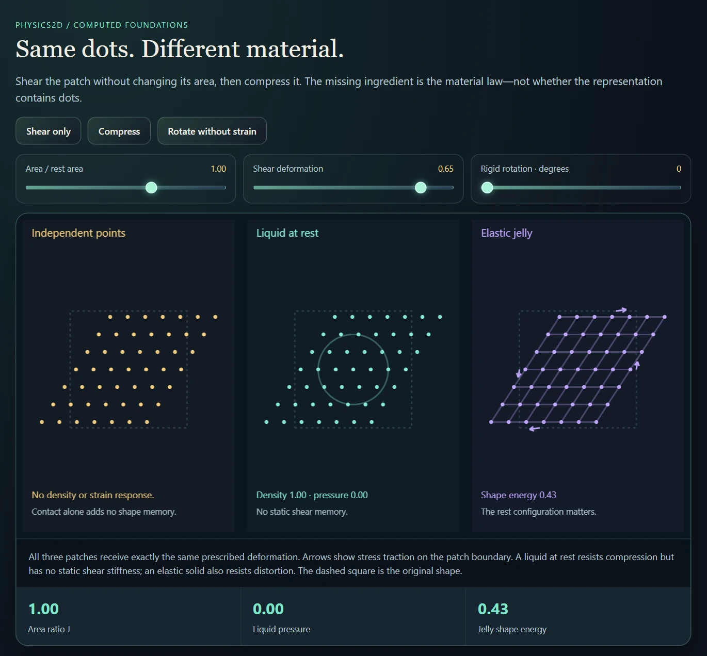
A computed constitutive-response experiment with prescribed deformation. It isolates density and elastic memory; it does not advance the native SPH or MPM solver.
Suspended · activate to run; playback pauses after the full panel leaves the vertical viewport.
Material particles retain deformation and history while a transfer grid mediates motion.
An MPM step transfers particle mass, momentum and stress information onto the grid, updates grid motion under the selected forces and constraints, then transfers the result back. The implementation uses MLS/APIC-style information and a smooth local stencil to preserve more structure than a position-only particle update.
The same transfer framework serves several constitutive families. Corotated elastic solids recover shape; snow-style plasticity changes the stored rest state; fluids retain volumetric response without shear memory; fiber stress reinforces a preferred direction. Thermal response, damage and magnetic stress extend those material branches. This is why melting, tearing and field-driven liquids belong to the same MPM story.
The constitutive branch determines what deformation means. Elastic response, plastic flow, thermal softening and damage require different state and update rules. A material preset therefore represents a collection of model choices and coefficients, not merely a color and viscosity slider. The grid visualization and transfer schematic make those choices easier to connect to the resulting motion.
This shared transfer is a versatile starting point, not a complete recipe for every material. Tearing needs a fracture or damage law; baking-like behavior needs heat transfer, processing history and changing constitutive response. The MPM extensions later in this brochure add those mechanisms, with their assumptions and current limits stated alongside the results.
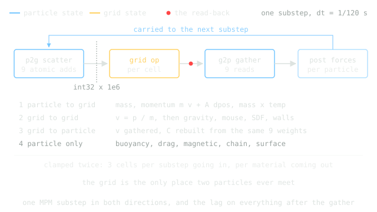
| Material branch | State or response | Native experiment |
|---|---|---|
| Corotated elasticity | Deformation gradient F, rotation and elastic stress | Soft Jelly, Rubber, Stiff Elastic |
| Snow / plasticity | Plastic projection and persistent compression history | Soft Snow, Packed Snow |
| Directional solids | Fiber reinforcement plus isotropic matrix stress | Wood, Rope, Bamboo, Carbon Fiber |
| Thermal / processing | Temperature, conversion and phase-related histories | Melting, Bake Oven, Glaze Kiln |
| Ferrofluid | Fluid pressure, viscous stress and gated magnetic terms | Ferro-Spike Bench |
For one coordinate, the stencil starts at floor(x/h − 1/2), so the local coordinate f lies in [1/2, 3/2). The three weights below are combined by an outer product in two dimensions. Their sum is one; with complete support this is the mass-partition property used by the scatter.
The same origin, weights and distances must be used by both directions. A mismatch can produce apparently plausible motion while corrupting a derived field. The solver internals document an earlier scatter/gather mismatch in the damage Laplacian as a concrete example.
For this complete quadratic stencil the second moment is h²I/4. Its inverse supplies the factor 4/h² in both stress transfer and reconstruction of the affine velocity matrix. That coefficient belongs to the basis; changing it independently changes the method.
offline_projs/Physics_2D/shaders/common/mpm_utils.glslThe particle deformation gradient is advanced using its affine velocity field. Elastic branches derive stress from that deformation; plastic branches modify singular values or stored rest state; thermal and damage branches modify the response using additional histories. These choices change the mechanics without replacing the transfer machinery.
In the notation below, τ denotes the Kirchhoff-like stress passed to the MLS transfer and Vₚ the reference particle area used by the implementation. The stress impulse and APIC affine momentum share the same node displacement, so the code combines them before scattering. Grid velocities then rebuild the particle velocity and affine matrix.
The implementation accumulates scaled integers on the grid, with finite precision and range. Velocity clamps and bounded substeps also influence the visible result. Partition of unity alone does not prove exact conservation for the complete sandbox with these interventions.
Resolution and stepping remain important. Stiffness-dependent substep choices are authored and capped; they do not establish a universal stability guarantee. Increasing stiffness or changing the grid can move a scene outside a previously useful operating range even when the same preset name is retained.
offline_projs/Physics_2D/shaders/physics/mpm_p2g.compDrag a particle to inspect the actual quadratic interpolation basis: mass conservation, position reproduction and affine velocity gather.
Draws with
Artifact
Export
Purpose
Made with
Demonstrates
Wheel over the scene may zoom; move outside it to scroll the page.
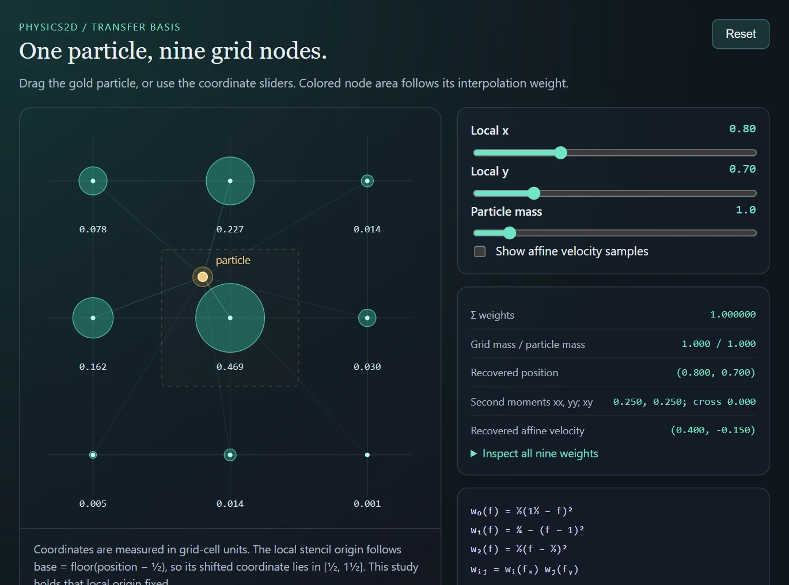
An event-driven transfer-basis study. It isolates the MPM interpolation rule; it does not run the native stress, collision or time-integration solver.
Suspended · activate to run; playback pauses after the full panel leaves the vertical viewport.
Crucible2.5D asks how material moves through large deformation, contact, flow and changing topology. Modal2D asks which small vibrations a particular object supports, and what a strike will sound like. Those goals favor different numerical work, even though both start from mass, internal forces and boundary conditions.
Modal2D assembles a mass matrix and stiffness matrix from a mesh whose geometry, thickness, material and supports matter to the instrument. Its eigenmodes turn that spatial problem into a compact set of oscillators. A small frequency error can mean an audibly mistuned note, so the shape model, discretization and convergence matter—not simply whether the motion looks convincing.
FEM is possible for large-deformation physics too; it needs suitable nonlinear, contact and topology handling. MPM itself uses a grid basis and a weak-form discretization with moving material samples. This is a choice of representation and workload, not a rule that one project needs accurate physics and the other does not.
| Question | Crucible2.5D | Modal2D |
|---|---|---|
| State to preserve | Moving material, deformation, plasticity, heat and damage | Geometry-dependent vibration shapes and modal amplitudes |
| Geometry over time | Flow, tearing and large rearrangement | Small motion around the shape used for the modal solve |
| Numerical work | Repeated spatial transfers, force updates and coupling | FEM assembly and eigensolve, then inexpensive modal playback |
| Accuracy to inspect | Stability, conservation, interfaces and resolution sensitivity | Frequencies, mode shapes, boundary conditions and mode truncation |
The current quick preview uses a 10×6 lumped-mass lattice with axial and diagonal springs and computes six modes. It provides immediate qualitative feedback while dimensions change. It does not preserve arbitrary mesh holes, detailed boundary geometry or the same stiffness formulation as the full FEM solve. The source warns that its absolute frequencies can differ substantially; that warning is not a new measured error bound.
A separate cavity shortcut is a user-tuned two-pole bandpass resonance. It is not a geometry-derived spatial pressure-mode solve. Conversely, fixed-mode Rayleigh-quotient sensitivities accelerate shape adjustment using FEM matrices; those are FEM-derived approximations, not another spring solver.
Liquid pressure and interfaces arise from weighted local neighborhoods.
The SPH solver uses weakly compressible pressure, viscosity, local surface-tension terms and additional velocity smoothing. Neighbor structure determines which particles exchange these quantities. Signed-distance collision handling and continuous collision checks help keep fast particles from simply passing through boundaries.
A hashed cell structure finds nearby particles. Density is accumulated with a normalized 2D cubic spline of support 2h; the force stage combines pressure gradients, viscosity and interface terms. XSPH then smooths relative particle velocities. The Codim Threads branch detects a local tangent and thinness, adapting the density treatment when a fluid bridge becomes line-like.
The sand-castle and jet-style scenes are useful because their expected interaction is legible: the liquid should transfer momentum to the deformable material rather than merely overlap it. The current SPH-to-MPM path records a reaction impulse, scatters it to a persistent grid and lets the MPM side consume it in the following update. This is a concrete return path, improving on a one-way visual interaction.
| Operation | Information it uses | What to inspect |
|---|---|---|
| Density + pressure | Neighbor masses, cubic kernel, rest density | Compression and free-boundary density |
| Viscosity + XSPH | Relative velocities within the support | Damping versus particle noise |
| Surface tension | Local interface structure | Drops, necks and reconnecting bridges |
| Codimensional adaptation | Tangent and thinness estimate | Thin threads versus a bulk blob |
| Collision + return reaction | SDF normals and MPM contact | A jet transfers motion to the deformable body |
WCSPH estimates density from neighboring masses and turns density deviation into pressure. Viscosity and XSPH velocity smoothing damp different kinds of local motion; surface-tension terms encourage coherent boundaries. Changing the smoothing scale changes both the neighborhood and which features the solver can resolve.
The Codim Threads route estimates local tangent and thinness information and adapts the density kernel toward a line-like treatment. This helps thin bridges retain a different character from a bulk 2D blob. It is an explicit adaptive approximation, rather than a general dimensional-invariance result.
In the jet experiment, the contact reaction is stored as an impulse. Dividing it by grid mass supplies a velocity change; multiplying by the timestep again would incorrectly make this interaction depend on the number of updates. Clearing even nodes with no current MPM mass prevents old reactions accumulating until new material arrives.
That mechanism does not justify a blanket claim of exact coupled momentum conservation. Sampling, spatial transfer, boundary constraints and the staggered update can still introduce error. The meaningful diagnostic is to inspect the jet, reaction transfer and material response together, then compare parameter changes under the same setup.
offline_projs/Physics_2D/shaders/physics/sph_density.compContact reaction scatteroffline_projs/Physics_2D/shaders/physics/sph_mpm_reaction.compDrag a probe through the actual 2D cubic kernel, inspect density contributions, and switch to the gradient that underlies local forces.
Draws with
Artifact
Export
Purpose
Made with
Demonstrates
Wheel over the scene may zoom; move outside it to scroll the page.
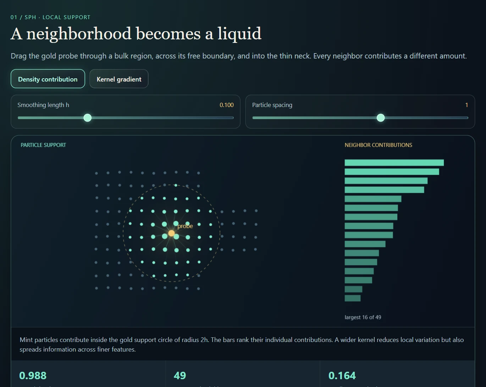
Computed kernel interpolation on prescribed particles. It exposes support and density; the native SPH motion solver remains in the desktop application.
Suspended · activate to run; playback pauses after the full panel leaves the vertical viewport.
A fixed grid carries air motion, temperature, smoke and reactive fields.
The air route uses a staggered velocity grid with pressure projection, advection and buoyancy-related forcing. Smoke, temperature, fuel and oxygen fields add visible and reactive quantities to that motion. The pressure solve uses an iterative grid method, so its iteration budget and boundaries are part of the experiment.
A MAC grid separates cell-centered scalars from velocities on faces. Advection transports the fields; force passes add buoyancy and selected injections; a pressure-potential solve repairs the velocity divergence; boundary passes enforce no-through-flow at solid faces. Temperature diffusion and the oxygen/fuel stages add further field updates. This is a full solver family, with smoke serving as a visible tracer of its motion.
Combustion-inspired behavior includes oxygen limitation, fuel accumulation, smoldering and a backdraft scenario. The chamber demonstration makes the causal sequence readable: a restricted environment can retain fuel while oxygen is scarce; changing access to oxygen changes the reaction. These are authored reduced rules rather than detailed chemical kinetics or a validated fire-safety model.
| Stage | Representation | Diagnostic |
|---|---|---|
| Advection | Face velocity and scalar fields | A smoke pattern follows the transported flow |
| Forces | Buoyancy, gravity-related terms and authored injection | Velocity arrows before projection |
| Pressure projection | Cell pressure potential correcting face velocity | Divergence before and after the solve |
| Diffusion + exchange | Air temperature and sampled particle state | Heat spreading through air and boundaries |
| Reaction / cavity models | Oxygen, fuel, reachability and stored pressure | A sealed chamber versus an opened vent |
The MAC grid stores horizontal and vertical velocity on cell faces. Advection and forces produce a provisional velocity. The pressure solve then finds a correction whose gradient removes divergence, with solid faces constrained by the SDF boundary.
The implementation stores a pressure potential whose scale already incorporates the velocity-correction convention. Its projection shader subtracts pressure differences divided by grid spacing, without another timestep multiplier. Additional blast or expansion sources alter the target divergence instead of behaving like ordinary incompressible advection.
The iterative pressure budget determines how well this discrete constraint is met. Pressure and divergence views diagnose the correction and residual; smoke brightness alone cannot establish that the projection has converged.
offline_projs/Physics_2D/shaders/physics/euler_project.compAir and source schedule ↗A coarse airtight grid records whether a region can reach the outer air. The oxygen pass uses this open/closed information to choose a replenishment rate. Hot smoky cells consume oxygen, while a low-oxygen smoldering branch can accumulate unburnt fuel vapor.
Opening a cavity changes access to oxygen. The backdraft branch uses the stored fuel and updated conditions to create a flash and associated flow effects. The explanation therefore follows four fields—reachability, oxygen, fuel and temperature—rather than identifying orange pixels with a single physical quantity.
The ordinary projection pressure and the airtight stored-pressure model have different purposes. A pressure solve used to constrain velocity is not automatically a thermodynamic equation of state. The chamber model and explicit front model provide the additional reduced behavior.
The field views matter because similar orange imagery can be produced by very different states. Fuel, oxygen, temperature and airflow explain whether the displayed response comes from available reactants, transport or a rendering choice. A useful recording shows those intermediate quantities alongside the visible flame.
offline_projs/Physics_2D/shaders/physics/euler_oxygen.compFuel flash stageoffline_projs/Physics_2D/shaders/physics/euler_backdraft.compCavity and vent mechanics ↗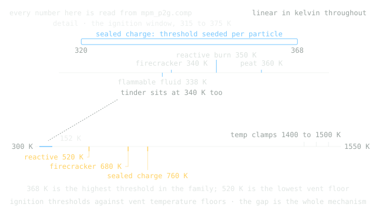
Compare before and after on a computed MAC grid. Move the forcing region and watch the divergence fall as the pressure solve converges.
Draws with
Artifact
Export
Purpose
Made with
Demonstrates
Wheel over the scene may zoom; move outside it to scroll the page.
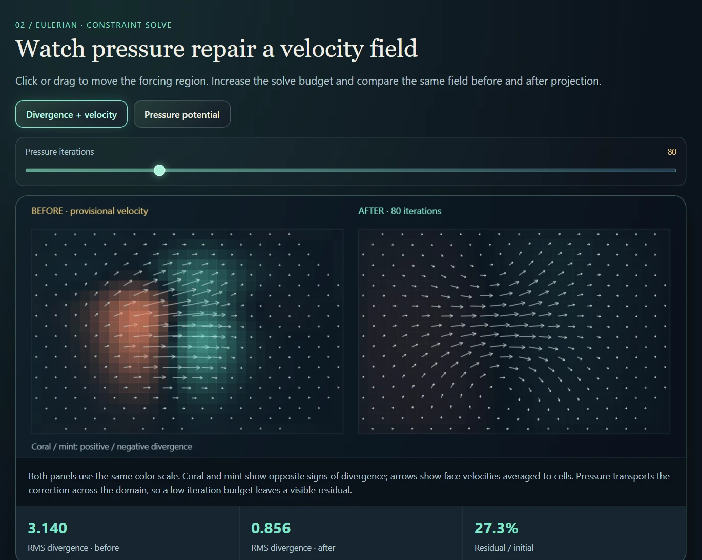
A 32 × 20 pressure-projection calculation with shared color scales and measured residual. Advection, combustion and particle coupling are separate native stages.
Suspended · activate to run; playback pauses after the full panel leaves the vertical viewport.
An open flame can shed hot gas into its surroundings. The same source inside a sealed pocket has to interact with the enclosure: energy and gas accumulate, the walls carry a load, and a breach changes the possible escape paths. The interesting behavior is the transition from storing an effect to releasing it through a newly available opening.
The native sandbox builds coarse occupancy and outside-reachability fields. A cell is enclosed when the outside cannot reach it through the current mask. Trapped pressure, heat and fuel-related state evolve alongside the material; cracks and moving matter can change that connectivity. The mask is deliberately coarse and thresholded, so a visually tiny gap may not yet be an open cell path.
Airtightness and pressure are different questions. Connectivity identifies a possible escape route; conductance, stored state and the release model determine the resulting motion. A pressure projection that tries to remove velocity divergence cannot, by itself, store the thermodynamics of a sealed gas volume. That is why this laboratory has a separate trapped-pressure and venting path.
Firecracker, Reactive Burn and Sealed Charge share a local progression: ignition or cooking, gas production, pressure buildup, cracking and release. Existing particle-state lanes carry the progress variables. Gas and the remaining seal determine a pressure surrogate; cracks weaken the seal, so a charge can bleed its pressure before a strong release occurs.
The vent gate depends on both cracking and pressure. Opening it deposits an authored fragment kick and heat while consuming gas and damping affine motion. Different thresholds and rates create a sharp firecracker, a slower deflagrating material or a tightly held charge. These are reduced material state machines, not resolved chemical detonations.
The surrounding enclosure is a second layer. Its reachability mask can trap and release effects at the scene scale. A material’s local sealed-charge state does not prove that its surrounding cavity is geometrically closed; both models can operate in the same scene.
The weapon/vessel system separately tracks shell integrity, core gas and heat, leaks, pressure, triggering and post-rupture vent decay. Pressure, impact and fuse/sensor triggers are distinct controls; Custom Physical disables the shortcut triggers so that the vessel response can be inspected on its own terms.
That object-level lifecycle is not the same state machine as a grain of Firecracker or Sealed Charge material. Nor is either one the outside-reachability mask of the room. Keeping these three scales separate explains why a material can vent locally, a vessel can rupture, and the room can still retain a pressure effect.
The outside-reachability calculation runs at a coarser resolution than the air grid. Occupancy thresholds and finite propagation can delay or remove a narrow opening. A useful resolution test therefore compares the mask itself, not only the rendered wall.
The chamber schematic conserves its small model’s mass and energy ledger, including enthalpy transported through the opening. That gives intuition for stored energy and release rate, but it does not validate native thermodynamics: the native implementation uses cellwise pressure evolution, clamps and authored gains.
The optional vent-front route detects newly opened, previously pressurized regions, clusters them and launches directional fronts. Deducting the assigned release before the legacy vent path prevents applying the same stored contribution twice. Front arrival and geometric pressure waves remain distinct from solving compressible flow.
Compare a sealed chamber, permanent vent and delayed breach. The flood-filled mask and the pressure history answer different parts of the question.
Draws with
Artifact
Export
Purpose
Made with
Demonstrates
Wheel over the scene may zoom; move outside it to scroll the page.
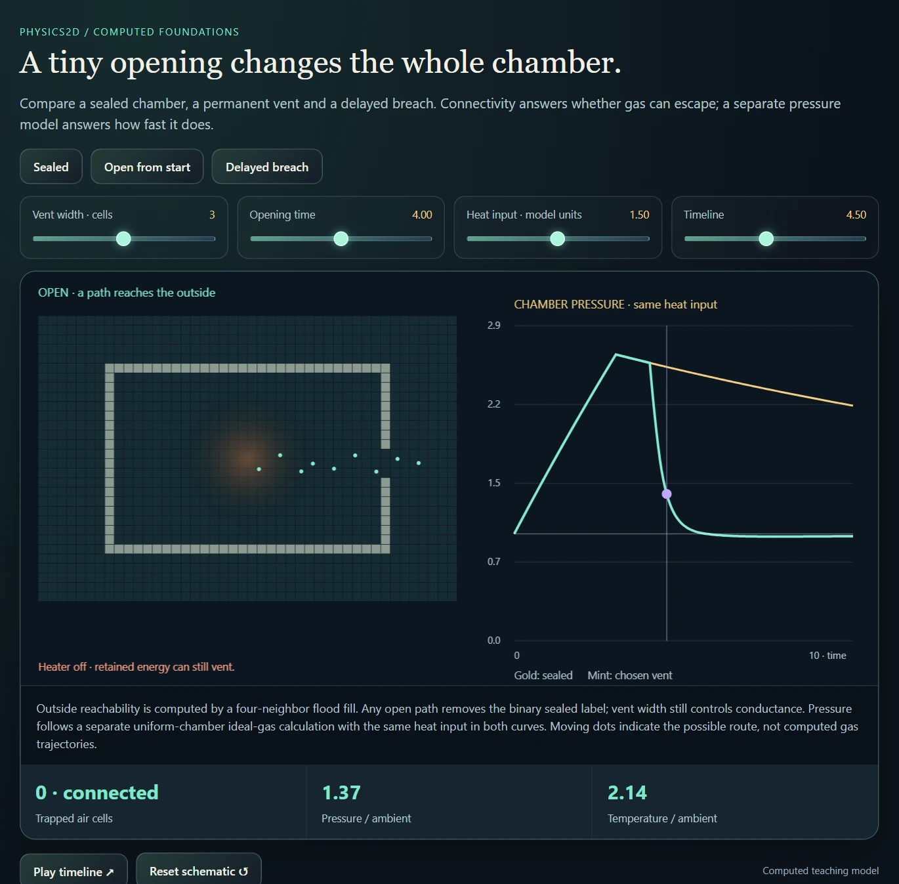
Computed connectivity plus a separate dimensionless ideal-gas chamber model. The opening is prescribed; the native sandbox uses different pressure and vent surrogates.
Suspended · activate to run; playback pauses after the full panel leaves the vertical viewport.
The default legacy blast combines authored heat, push and smoke responses. A separate selectable Sedov-style mode propagates a geometric front and deposits impulses, heat and air motion as that front crosses the scene. Its strong-front expansion follows a two-dimensional similarity scaling before continuing near a configured acoustic speed. This makes arrival and affected regions inspectable without solving a full compressible flow system.
This distinction is essential. A moving ring and a convincing impulse response do not establish a resolved pressure discontinuity from a compressible Euler solver. The open blast range is best understood as a reduced propagation and coupling experiment, with explicit assumptions about energy, front speed and deposited effects.
Current native shock passes include sampled SDF visibility checks. A front reaching the right radius is therefore only one part of applying an impulse: the route to its receiver also matters. Thin geometry and particle-material shielding remain limitations. The study below isolates arrival between frames and a simple wall test; it does not identify the unshown blast-mode setting in a recording.
The front is represented by an origin, energy, previous radius and current radius. Each update sweeps an annulus. GPU passes deposit divergence sources, heat, smoke, directional wind and particle impulses in their appropriate places in the schedule.
The reduced strong-front scaling follows the two-dimensional similarity exponent. The implementation continues at a configured acoustic speed when expansion would otherwise slow below it, and uses a softened inverse-square radial overpressure envelope. Energy and gains are simulation parameters, not a claim of calibrated explosive yield.
A persistent particle guard prevents the same front from repeatedly kicking a particle merely because it occupies the rendered ring for several frames. Owner exemptions avoid double-counting a rupturing vessel’s own casing impulse. Front-crossing impulses do not receive a second timestep factor.
offline_projs/Physics_2D/src/physics/eulerian/shock_front.hBlast deposition and caveats ↗The optional vent-front path compares previous and current reachability. Newly opened cells with sufficient prior pressure are clustered; the outside-field gradient provides an aperture direction. The strongest clusters spawn cone-shaped fronts.
A configured fraction of stored pressure is assigned to the new front, and the corresponding cavity region is deducted before the legacy release path runs. Vent fronts carry an impulse while cavity heat remains on its existing path. This ownership rule reduces double application of the same release.
This optional route is off by default in the inspected front parameters. It complements the closed-chamber and blast-range scenes; it should not be inferred from every visible smoke jet.
The intermediate front and affected-region views are therefore more informative than bloom alone. They explain why an object is pushed at a particular moment and distinguish a propagation rule from an instantaneous radial force.
offline_projs/Physics_2D/src/physics/eulerian/shock_front.cppVent sequence ↗Compare a thin sampled ring with swept arrival. Change the time step, then place a wall between the source and its probes.
Draws with
Artifact
Export
Purpose
Made with
Demonstrates
Wheel over the scene may zoom; move outside it to scroll the page.
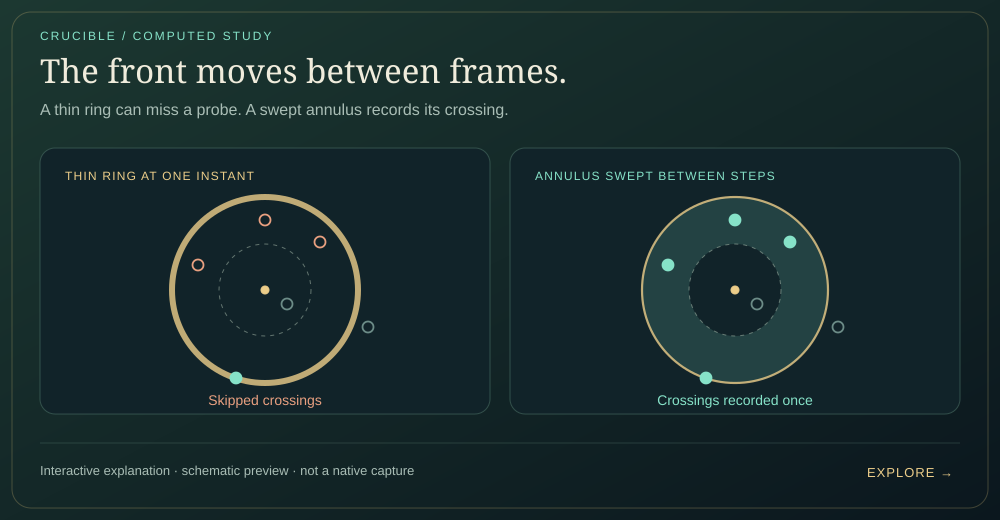
A stationary-probe teaching model isolates arrival and direct visibility. It does not solve compressible flow, combustion, reflection or diffraction.
Suspended · activate to run; playback pauses after the full panel leaves the vertical viewport.
Follow the momentum and heat exchanged between solvers.
The representations do not share one universal pressure or constitutive solve. They exchange specific quantities at specific stages. That explicit structure is the useful technical story: a contact reaction can wait in an accumulator; heat can be mixed on a grid; air can receive smoke and temperature before feeding drag and ambient conditions back to particles.
The SPH jet and thermal-contact benches isolate two of these loops. The diagram below makes the accounting visible before adding spatial sampling and constraints. In the native application, pipeline textures and particle fields expose the same ownership questions inside the larger coupled simulation.
The original mechanical v2 path is optional and is narrower than its “two-way” label suggests. Separating recorded, deposited and actually applied reaction exposes missing terms, receiver-grid losses and velocity clamps. Thermal exchange v2 is a different path and is enabled by default.
The full-contact experiment closes one specific gap: it returns repulsion, restitution and contact damping, deposited at the original contact position. It is available under A/B models → Coupling v2 → Full contact reaction (experimental), with the new option off by default. This improves the local accounting without replacing the existing contact law or erasing receiver-grid losses.
| Interface | Exchange | Boundary of the model |
|---|---|---|
| SPH ↔ MPM | Contact response; optional penalty-only or full-contact reaction; thermal mixture | Full-contact mode closes the local restitution/damping omission. Delayed grid transfer, empty cells and caps still limit the applied reaction. |
| MPM ↔ Eulerian air | Heat, smoke and related scalar injection; sampled temperature and drag | Field sampling and pass order affect the response |
| Particles ↔ magnetic fields | Occupancy / material sources; field and stress feedback | Analytic drive plus iterative self-field and authored surface terms |
| SDF → particles / air | Collision normals, friction and boundary temperature | Kinematic terrain has no dynamic momentum response |
The MPM transfer grid is cleared and rebuilt each substep. Persistent material state stays with the particles. Eulerian velocity and scalar fields, in contrast, evolve on their own grids. The SPH neighbor structure answers a third question: which particles fall inside a kernel support?
The coupling distinguishes instantaneous impulses from rates integrated over a timestep. Original Coupling v2 stores the reaction of the SPH penalty force in a persistent accumulator; the next MPM grid pass consumes and clears it. Restitution and contact damping also change SPH velocity, but that original return path does not include their reactions. A return accumulator is therefore progress toward two-way coupling, not proof that every contact impulse is balanced.
This ordering explains otherwise puzzling differences between two visually similar interventions. A force applied before pressure projection can be redistributed by the air solve; a directional gust applied after projection is a separate contribution. Likewise, a post-transfer particle force has not yet participated in the shared-grid contact calculation.
The frame order is part of the model. A transfer performed before one subsystem's update may be consumed by another on the next step. That staggered coupling can be useful and stable in a chosen scene, but it should not be described as one simultaneous solve of every physical equation.
| Representation | Persistent information | Exchange / diagnostic |
|---|---|---|
| MPM particles | Deformation, affine motion, temperature, material history | Mass and momentum scatter / transfer-grid view |
| SPH particles | Position, velocity, thermal and material state | Neighbor kernels / contact reaction |
| Eulerian air | Face velocities; advected scalar fields | Projection, heat, fuel and oxygen views |
| SDF and cavity grids | Boundary shape; conduction and reachability | Normals, wall heat and sealed/open masks |
offline_projs/Physics_2D/shaders/physics/mpm_grid_op.compOriginal v2 recorded the opposite of the repulsion impulse, although restitution and contact damping changed SPH velocity afterward. Full-contact mode adds those missing changes and preserves the position where the contact was evaluated. Its scatter therefore uses the original contact stencil, rather than the position after recovery and integration.
The ledger deliberately excludes gravity, SPH internal forces, mouse input, XSPH, SDF contact and positional recovery. Those are distinct operations, not part of the MPM contact reaction. Legacy and penalty-only v2 keep their existing execution paths.
The retained GPU regression dispatches the production force, scatter and receiving-grid shaders in a hidden OpenGL context. It compares against an independent double-precision response, isolates each contact term, varies timestep and mass/index placement, checks zero contact and one-time consumption, and tests the first moment of deposition. All 783 checks passed on an RTX 4080 Laptop GPU; the largest comparison error was about 5.0 × 10⁻⁶ in simulation units. Old-mode outputs were byte-identical to checkpoint shaders in those controlled cases.
The same probe deliberately demonstrates remaining losses: an impulse of magnitude 1.25207 deposits into the grid, but an empty receiver applies zero; a near-empty capped receiver applies only 1.8 × 10⁻⁵. Boundaries, fixed-point rounding, receiver movement and the next-step delay also remain. The regression verifies this local correction. Whole-scene conservation and long-run stability remain separate questions.
| Controlled case | What it establishes |
|---|---|
| Repulsion / restitution / damping separately and together | Only the MPM-contact velocity changes enter the reaction. |
| 60 / 120 / 240 Hz; heterogeneous masses and nonzero offsets | Time integration and local/global indexing match the independent reference. |
| Original-position scatter; zero-contact and consumed records | The intended stencil is used; stale impulses do not reappear. |
| Old modes versus preserved production shaders | Byte-identical force outputs and deposition in the regression scenes. |
| Broad / empty / nearly empty receiving grids | Local accounting succeeds while transfer losses remain observable. |
Switch between an impulse ledger and contact heat. Vary the participants and inspect what is stored before the other solver consumes it.
Draws with
Artifact
Export
Purpose
Made with
Demonstrates
Wheel over the scene may zoom; move outside it to scroll the page.
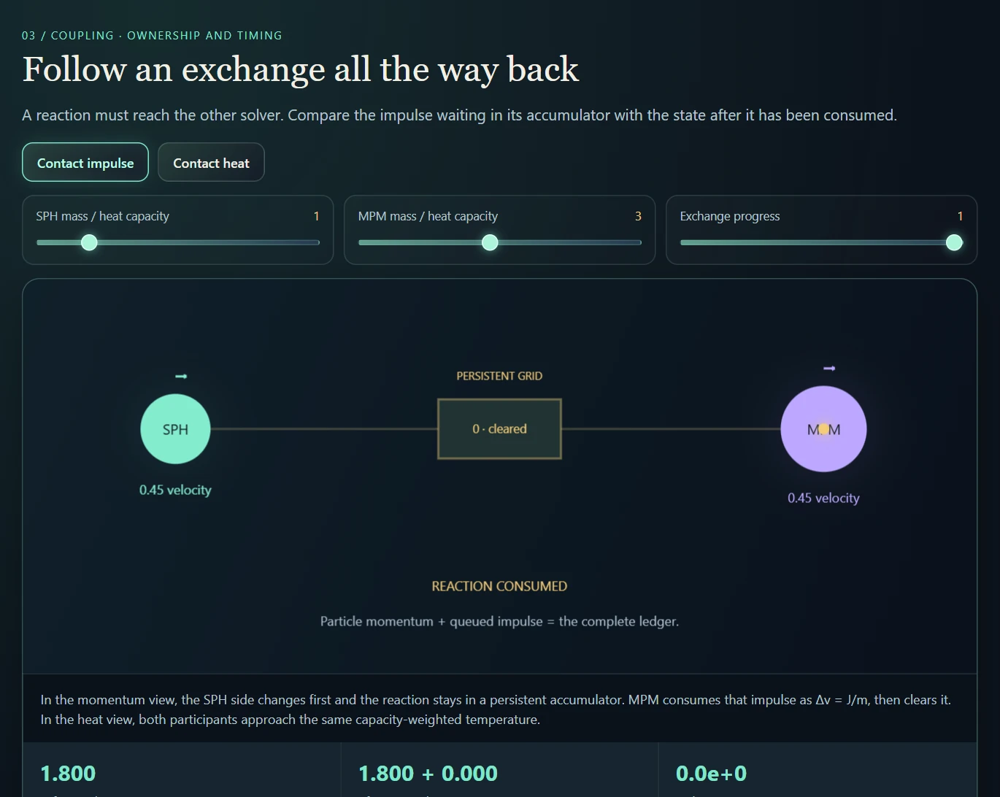
Ideal exchange calculations illustrate the native ownership and scheduling. Conservation in this small ledger does not prove conservation for the full spatially coupled sandbox.
Suspended · activate to run; playback pauses after the full panel leaves the vertical viewport.
The same mechanics grows into direction-aware, thermal and magnetic material experiments.
There are two related directional effects. Fiber reinforcement changes the constitutive stress even while a material is intact. The newer AnisoMPM damage branch then changes how positive tensile stress drives weakening: it adds a structural tensor, a matched toughness normalization, retained maximum history, and a nonlocal damage field. Comparing these separately avoids mistaking a stronger fiber for a different fracture criterion.
The anisotropic damage work introduces directional structure rather than relying only on an instantaneous scalar break threshold. A structural tensor carries preferred orientation; a damage-driving history prevents the material from forgetting a previously reached load; a nonlocal term spreads the interaction over a chosen length scale. Residual stiffness keeps the damaged response from becoming a completely unconstrained numerical singularity.
The Aniso Tear Bench compares legacy, isotropic and anisotropic choices in a common scene. This makes fiber direction and damage localization visible as algorithmic differences. The same loading can produce a different fracture pattern because the material model changes how deformation contributes to the driving field.
The nonlocal AnisoMPM fracture modes are selectable and default-off in the audited source. They are currently enrolled in three material branches—Brittle, Tough and Ortho Tear. Adding a material name to a profile table is insufficient without the matching constitutive hooks.
The damage branch takes the positive spectral part of the undegraded Cauchy stress, so compression and previously weakened stress do not replace the intended tensile driver. A usable fiber direction is rotated by the polar rotation; the isotropic control sets the structural tensor to the identity.
The critical stress is normalized for the authored uniaxial stretch criterion. That matters when comparing isotropic and anisotropic modes: switching directionality should not accidentally change the reference toughness. The history option retains the maximum driving value, subject to an explicit cap.
The damage evolution uses a gathered Laplacian, an explicit positivity constraint and a bounded update rate. Residual stiffness prevents total loss of stiffness. The formulas below summarize the branch; the code also includes threshold floors and parameter clamps.
offline_projs/Physics_2D/shaders/physics/mpm_p2g.compNonlocal damage gatheroffline_projs/Physics_2D/shaders/physics/mpm_damage_gather.compThe Aniso Tear Bench exposes legacy, isotropic and anisotropic choices under a common loading setup. Rotating fibers while keeping the reference toughness fixed tests the directional driver. Showing the damage field reveals where the result originates before the visible body separates.
The current regularization length is a configured ratio times grid spacing. Changing resolution with the same ratio changes that physical length. A resolution study should track the intended length as well as loading, constitutive parameters and substeps; otherwise a changed crack width can be an expected model change.
offline_projs/Physics_2D/shaders/physics/mpm_p2g.comp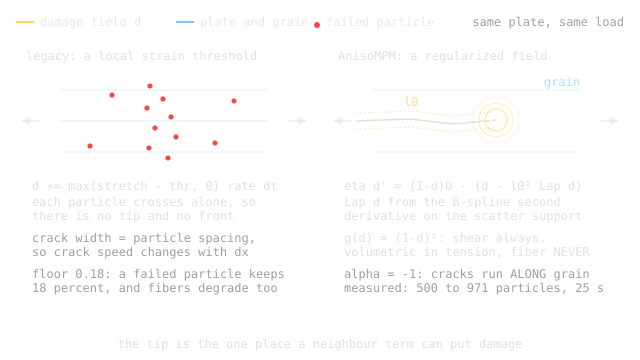
A matched isotropic / anisotropic comparison computes the normalized tensile driver, retained history and nonlocal damage update through a load–unload cycle.
Draws with
Artifact
Export
Purpose
Made with
Demonstrates
Wheel over the scene may zoom; move outside it to scroll the page.
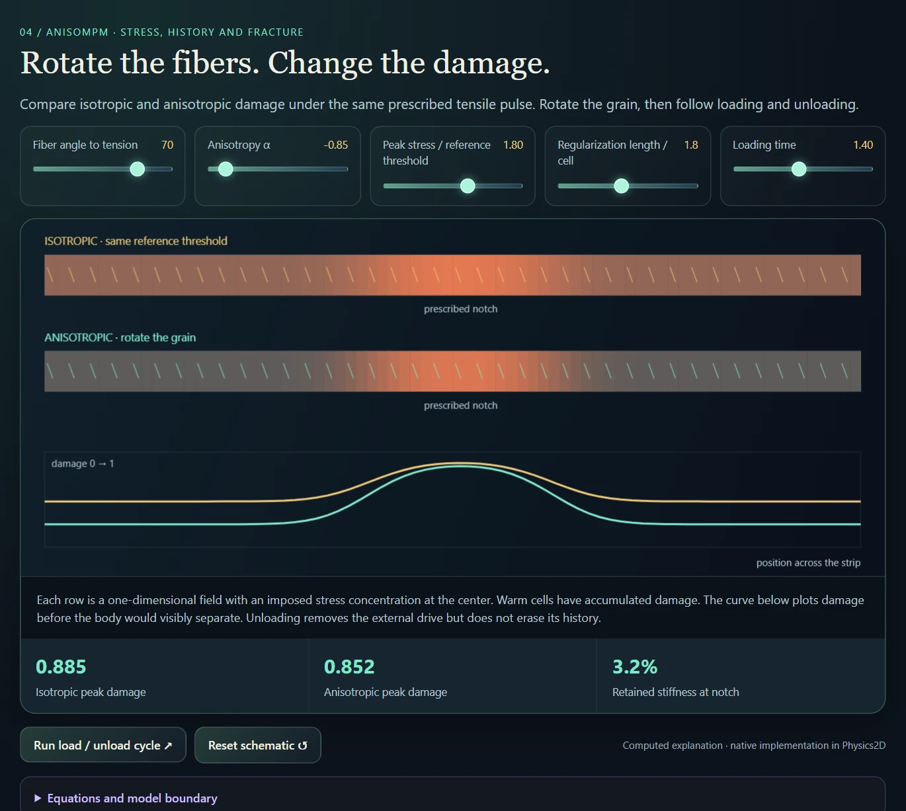
Prescribed stress on a one-dimensional strip isolates the damage law. These colored strips are computed damage fields, not a native fracture animation.
Suspended · activate to run; playback pauses after the full panel leaves the vertical viewport.
Thermal work includes contact exchange, diffusion, external heating, cooling and material-dependent response. A contact-temperature mixture replaces the older maximum-temperature behavior that could ratchet a system upward merely through repeated contact. The revised transfer is still one part of a larger update containing sources, cooling and bounds.
Material processing extends beyond a single melting threshold. The project explores curing, phase change, gas production, crust formation and different surface/core behavior. Clay, wax, epoxy and baking-inspired presets use these histories to create visibly distinct transitions. Their parameters are authored for the laboratory and are not presented as calibrated constitutive data for industrial manufacturing or food science.
The recordings make three distinctions visible: softening changes the response now; a setting or processing variable preserves a history; and prolonged flow can remove the distortion that would otherwise drive shape recovery. The next section isolates that last distinction. For shell/core materials, setting the exterior first also changes how an expanding interior is restrained.
Porous Growth Comparison isolates another issue: a material should not pull itself back to its unexpanded shape merely because its gas-driven rest area grew. An optional correction now measures elastic stress and tearing against that grown rest shape. Scene 143 compares it with the legacy law and separates both from the scalar thickness controls.
The missing depth becomes visible when a heated porous body starts to break. In a planar model, an opening can cut the only remaining material connection. The first take shows excessive fragmentation into separated strands; the second keeps larger pieces and develops cracks, a more useful appearance for the intended steamed-bun material.
The two support takes show the other side of the experiment: the bodies deform under continued heating but remain together. Different levels of extra support change the deformation and cracking while keeping the overall response firmer. Here, 2.5D means an approximation of depth support in a planar simulation: selected material gains and optional support forces stand in for effects of thickness. It does not add a volumetric solid or recover real connections behind each pore.
These are qualitative native sessions, with different materials, fuel arrangements and hand-applied heating. They make the behavior and its limitations visible; they do not isolate one support coefficient or establish a physically calibrated baking model. The matched scene and retained-height measurements below provide a separate, controlled comparison.
Scene 143, Recording: Porous Growth Comparison, starts three equal domes with two particle-free holes each. Left to right: Steam Bun, Crust Dough, Crumb Loaf. All begin at 365 K under the same 560 K radial heater. The captures below use identical initial conditions and 10,605 particles, stopped after 600 frames. Compare a material with itself across images: the middle specimen sits closer to the heater.
Both captures use the corrected growth law. Pure 2D disables the additional support routes; Thickness surrogate enables the existing Bake/Kiln gains for shell/core stiffness, rest area, retained gas and tear thresholds. Steam Bun retains 0.690 world units of height here versus 0.623 in pure 2D. This is a bounded result from this scene: every body settles, and a scalar thickness gain cannot recreate material connections behind a through-hole.
| Material in this fixture | Pure 2D height | Thickness-surrogate height |
|---|---|---|
| Steam Bun | 0.623 | 0.690 |
| Crust Dough | 0.629 | 0.720 |
| Crumb Loaf | 0.613 | 0.699 |
The previous law used the inflated target area in its volume term, while the corotated term still measured deformation from the unexpanded rotation. At free isotropic growth the first term therefore pulled inward even when the volume term was satisfied. The optional law applies an isotropic growth split to both terms. It also stops setting from erasing the grown deformation, measures tear strain relative to growth and removes Crumb Loaf’s direct pore-state-to-tear source. Mechanical strain and shell/core mismatch still produce damage.
Growth-consistent porous stress is selectable under Advanced → Bake / Thickness. It is enabled by the corrected scene-143 modes and defaults off elsewhere. Only Steam Bun, Crust Dough and Crumb Loaf are enrolled. The production-shader regression passes 234 checks, including free rotated growth, loaded response and 24 byte-exact checkpoint comparisons with the option disabled. Four 600-frame full-engine runs retain finite particle and material states; these checks establish local properties, not convergence or a calibrated baking law.
offline_projs/Physics_2D/shaders/physics/mpm_p2g.compProduction-shader invariants and disabled-mode regressionoffline_projs/Physics_2D/tests/porous_growth_test.cppThermal particles contribute weighted heat capacity and heat-capacity times temperature to a shared grid. The consume pass gathers numerator and denominator and relaxes toward their ratio. A hot particle can therefore cool while heating colder neighbors; adding cold water lowers the mixture temperature.
The native MPM consume pass decodes differently scaled fixed-point accumulators and uses a relaxation coefficient of 0.45 times the substep. The displayed equations describe the exchange in unscaled units. They separate a sensible contact target from other operations such as material phase changes, external heaters, cooling and clamps.
Equal exchange rates and matched transfers matter for conservation. A weighted target is not by itself a proof that every source, boundary or differing participant update preserves total thermal energy.
offline_projs/Physics_2D/shaders/physics/mpm_contact_mix.compHeat paths through the system ↗Reversible softening changes stiffness as temperature varies. Plasticity stores a changed rest configuration. Curing stores a conversion that does not simply reverse on cooling. Phase transitions can include a latent-heat budget. These are different state updates, even when each initially looks like a solid getting softer.
Shell/core presets add separate surface and interior histories. A crust or glaze can mature while its interior remains compliant or produces gas. Resulting mismatch can bend, inflate, split or vent the body. The authored profiles turn this into a material-interaction experiment rather than a calibrated manufacturing predictor.
The useful comparison is a repeatable heating sequence with temperature and state fields visible. Two materials may look similar initially yet diverge because one softens, another cures and another forms a resistant shell. Recording only the final glowing image would conceal the mechanism that distinguishes them.
| Mechanism | Example family | Useful paired observation |
|---|---|---|
| Softening / rehardening | Wax, hot glass | Temperature and deformation during heating and cooling |
| Irreversible conversion | Clay, epoxy, ceramic | Conversion state before and after cooling |
| Shell versus core | Glaze Clay, Crust Dough | Surface state versus core expansion |
| Thermoelastic mismatch | Quench Steel, Spring Steel Strip | Temperature gradient versus bending / residual response |
| Gas and rupture | Puff Clay, Firecracker Pellet | Stored pressure / conversion versus vent timing |
offline_projs/Physics_2D/shaders/physics/mpm_p2g.comp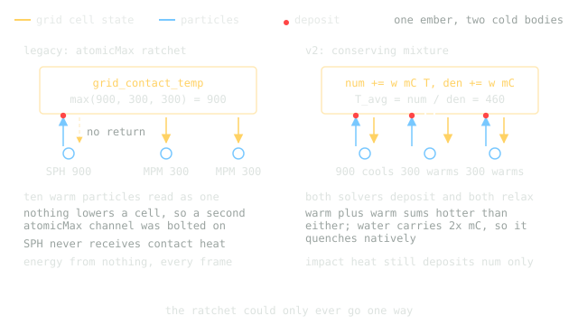
Heat reaches a fast-setting shell before the gas-generating core. Compare their histories, then add strain to open a modeled vent.
Draws with
Artifact
Export
Purpose
Made with
Demonstrates
Wheel over the scene may zoom; move outside it to scroll the page.
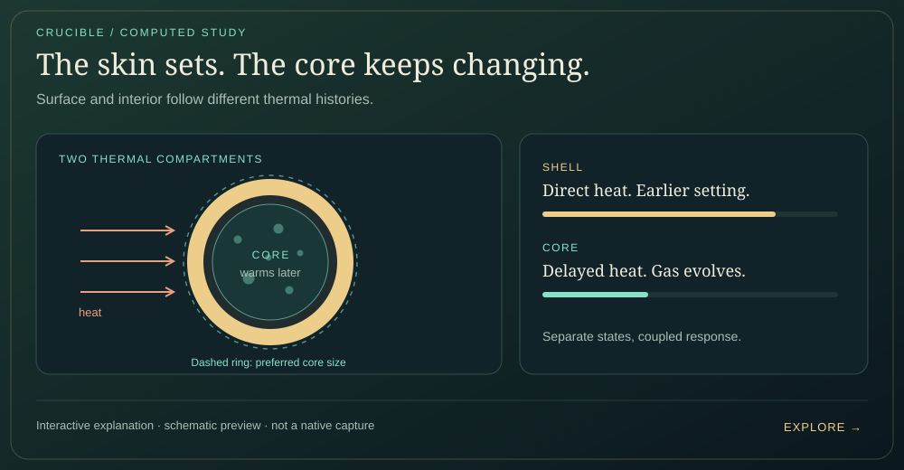
Computed two-compartment heat exchange and native-inspired crust/gas rates. The cross section and scalar tear diagnostic are a reduced teaching model; the recordings show native MPM behavior.
Suspended · activate to run; playback pauses after the full panel leaves the vertical viewport.
Scrub a heating–cooling cycle and compare temperature, reversible stiffness and retained conversion across the same material strip.
Draws with
Artifact
Export
Purpose
Made with
Demonstrates
Wheel over the scene may zoom; move outside it to scroll the page.
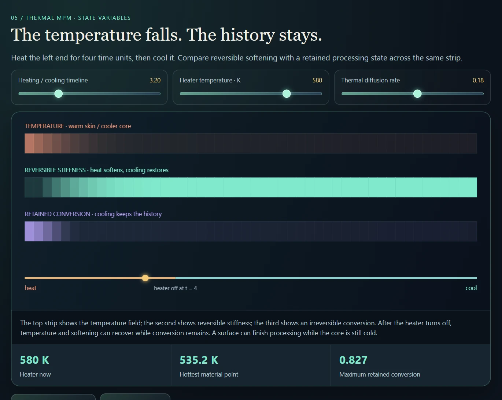
Computed 1D diffusion and a native softening law, paired with illustrative conversion kinetics. The native project adds deformation, phase budgets and material-specific processing.
Suspended · activate to run; playback pauses after the full panel leaves the vertical viewport.
Cooling early can preserve enough structure for a deformed body to recover. Heat it for too long and the material can lose the elastic distortion that drove that recovery. Cooling then restores stiffness in a changed shape. I explore that distinction with successive heat and cool brush passes in the recording.
A compatible mechanism exists in the native phase-material branch: heating reduces stiffness and relaxes the deformation gradient. Cooling reverses the phase fraction, but it does not undo that relaxation. The specimen’s exact material is not visible in this take, so the study illustrates this source-backed mechanism without claiming to reconstruct its settings.
Hold the same distortion in two samples. Change the heating duration, cool both, then release the load and compare the remaining shape.
Draws with
Artifact
Export
Purpose
Made with
Demonstrates
Wheel over the scene may zoom; move outside it to scroll the page.
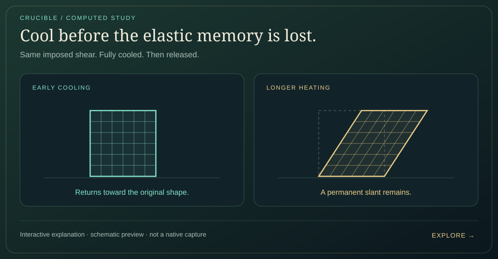
A local reduction of the native phase-material reset, with prescribed heating and ideal unloading. It omits transport, contacts and spatial flow; teaching updates are not recording seconds.
Suspended · activate to run; playback pauses after the full panel leaves the vertical viewport.
Start with the same pool under two interventions. The magnetic probe pulls the material upward into a narrow column while neighboring surface peaks appear; Spring Drag grabs a selected patch and moves it mechanically. The status bar identifies each tool. Switching between them makes field-driven attraction and surface shaping visibly different from a direct local pull, although this hand-operated recording is not a force-matched benchmark.
The surface peaks are the familiar visual cue of ferrofluid: a liquid carrying magnetic particles that responds to an applied field. In three dimensions, the interface can form arrays of spikes across a surface; this planar laboratory shows their profile as peaks and narrow columns. The linked external research video provides that 3D context, including comparisons with real ferrofluid experiments. It is background for the phenomenon, not footage of Crucible or evidence that this simplified model reproduces the same physics.
The ferrofluid branch is built into MPM rather than applied only as a visual force on dots. It resets deformation to a volumetric fluid response, adds viscous stress from the affine velocity matrix, and incorporates coarse directional magnetic stress near the interface. The separate force pass handles field-gradient attraction. Pressure, translation, alignment and surface shaping therefore have distinct controls and failure modes.
The magnetic work combines external fields, material response and iterative field calculations. Temperature and remanence-related state can alter behavior, while simplified soft-iron handling introduces a separate approximation. The ferro-spike bench includes explicit traction and corrugation seeding, so its spikes should not be advertised as an instability emerging solely from a complete self-consistent field solve.
The companion recordings expose field direction while the probe moves, then introduce induced and permanent magnetic responses. Field colors are diagnostic, not temperature or emitted light. A separate fantasy-style path prioritizes visual exploration; the opening sandbox tour also shows living-culture growth, which uses its own procedural field rules.
The inspected ferrofluid branch combines hydrostatic pressure and viscous stress. Its optional interface route adds a coarse 2D Maxwell-like directional term, using the drive field, a bounded contribution from the total field, occupancy and wall gates. The native comments distinguish this from an external negative-pressure well, which previously caused undesirable collapse patterns.
The constitutive path and Kelvin-style body-force path are complementary. The former changes how neighboring material transmits traction; the latter changes bulk motion in a field gradient. Surface corrugation, saturation, thermal response and remanence-related state add further choices. These are inspectable approximations with authored stabilization, not a complete continuum electromagnetics solver.
offline_projs/Physics_2D/shaders/physics/mpm_p2g.compMagnetization and gradient-force pathoffline_projs/Physics_2D/shaders/physics/new_magnetic_force.compThe external pole field is evaluated analytically. Optional particle magnetization carries relaxation, saturation and remanence-related state; temperature changes the authored material response. The grid self-field contributes to the force gradient, while the inspected magnetization-state update responds to the external field to keep its feedback bounded.
Kelvin-style forces use spatial variation of total field magnitude. Surface traction and corrugation seeding add a separate visible spike mechanism. Comparing those controls independently shows which part comes from the field solve and which from explicit surface shaping.
The fantasy backend is a separate expressive force system. The distinction lets the same laboratory explore convincing field imagery and inspectable physical approximations without treating every material label as a validated electromagnetic model.
offline_projs/Physics_2D/src/physics/magnetic/new_magnetic_field.cppMagnetization, force and shapingoffline_projs/Physics_2D/shaders/physics/new_magnetic_force.compMagnetic coupling paths ↗Living particles are scattered into occupancy fields. A blurred mask confines the field engine, and a selector switches among SmoothLife-inspired, Lenia and Gray–Scott rules. The evolving field is then sampled back by particles to update vitality, growth drive and membrane forces.
An optional revival field spreads the influence of nearby living material. Sculpt mode changes the existing material without adding mass; Grow mode can insert particles at detected membrane/frontier regions, bounded by an interval, per-step budget and total growth cap.
The diagnostic panel reports field mean, variation, mid-band coverage and living/dead occupancy. A field view beside the material view makes clear whether a change originated in the local rule, the confinement mask or the mechanical response.
Living Culture adds SmoothLife-, Lenia- and reaction–diffusion-inspired fields linked to particle insertion, vitality and membrane behavior. These systems connect continuous local rules to material presentation. They are mathematical and procedural life-like experiments, not biological tissue models. They belong as related studies around the core material-interaction workflow.
| Field family | Local rule | Material connection |
|---|---|---|
| SmoothLife / Foam | Inner/outer neighborhood response with separate parameter sets | Confinement, vitality and membrane structure |
| Lenia | Kernel neighborhood with a smooth growth response | Continuous growth field sampled by particles |
| Gray–Scott | Two reacting and diffusing concentrations | Pattern boundaries can drive membrane activity |
| Revival / insertion | Spread field plus bounded frontier requests | Revive existing material or explicitly add particles |
offline_projs/Physics_2D/src/physics/living/living_culture.cppTwo-channel reaction–diffusion ruleoffline_projs/Physics_2D/shaders/physics/living_culture_field_gs.compMove a pole and compare field direction, a computed gradient-force proxy and directional stress at a material probe.
Draws with
Artifact
Export
Purpose
Made with
Demonstrates
Wheel over the scene may zoom; move outside it to scroll the page.
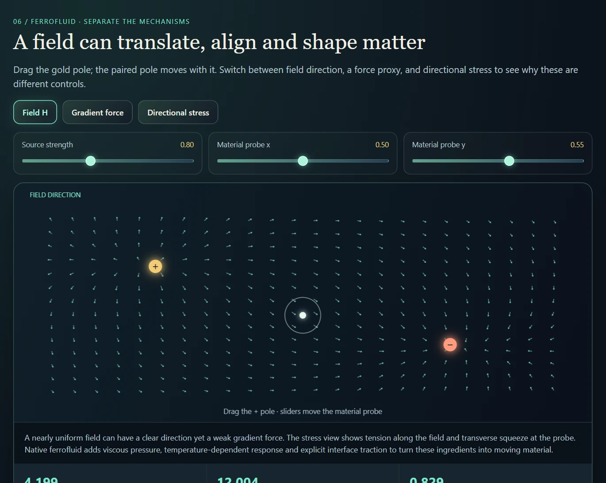
An analytic pole-pair schematic separates the mechanisms. It does not replace the native magnetization solve or claim emergent ferrofluid spikes.
Suspended · activate to run; playback pauses after the full panel leaves the vertical viewport.
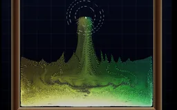
Recorded examples · 1Magnetic and material fieldsThe probe raises columns and surface peaks; a direct mechanical drag produces a different response in the same pool.＋The UI makes the interfaces part of the experiment.
Twenty-four recording compositions make the existing material laboratory easier to explore. Load the recording category in the native Scene Browser, then choose Load and run or Load paused. Empty magnetic and living-material containers let the act of placing a material introduce the experiment; comparison rows and matched supports keep the remaining scenes legible. P pauses, R resets the take paused, and U hides the interface.
Recording mode also separates the scene heater from its drawn gizmo. Hiding the interface no longer switches off the kiln source in these new scenes. The old linked behavior remains available as an explicit comparison; source temperature and actual activation are different settings.
The new capture controls separate how heat looks from how it evolves. Exposure, saturation, an emission threshold and ironbow/cool–warm/spectral temperature views change the presentation. A thermal reservoir changes the experiment. The optional symmetric-flux route targets one precise diffusion exchange error; it does not make the entire coupled engine energy-conserving.
Burger Griddle begins preheated at 420 K under a 590 K controlled source. Burger Press Pair compares 300 K and 480 K starting states with no continuing heater. Both use thermal MPM layers; their finite cooking and softening responses can saturate. Temperature view separates heat transfer from a subtle change in shaded appearance.
For a manual heat test, run the simulation, leave creation and selection modes, move the pointer onto a specimen and hold G. The brush is inactive over interface panels and while paused. Material beauty or Temperature reveals material-driven changes; Batch colors can hide browning. These food analogues soften, set and change color, but do not burn away like fuel.
| Record | Where to begin | What the comparison reveals |
|---|---|---|
| Field-driven matter | Magnetic Tank · Living Pedestal | Place one ferrofluid or Culture Tissue specimen. Show the field, then the material responding to it. |
| Heat changes structure | Crust & Kiln Gallery · Reaction Row | A thick boule, tile and hollow vessel; then equal squares of different materials above small fuel pads. |
| Pores, growth and scalar thickness | Porous Growth Comparison · scene 143 | Reset the same heated geometry across pure 2D, corrected thickness, legacy thickness and z-occupancy support. Compare each material with itself across takes. |
| Force meets structure | Three Grains · Layered Press | Identical loads across fiber directions; a layered bun/patty/stretch analogue under heat or a press. |
| Memory and indirect warming | Metal Heat Cycle · Glass Drape · Fuel & Cauldron | Matched cold/hot pieces; then a compact cauldron whose contents gently warm without a radius heater. The original thick-pot failure remains in the audit. Metal shows heat-treatment memory, not calibrated annealing. |
| An event needs room | Rocket & Chamber Range | An empty flight corridor, breakable door and three witness objects. Compare an intact chamber with the same scene opened. |
In Presets → Recording studio, load Recording: Porous Growth Comparison. Each mode button reloads identical geometry and pauses. P runs or pauses, U hides the interface, and R reloads the default corrected thickness route. Keep frame count and solver settings equal.
Z-occupancy adds an 8-bit remaining fraction that scales particle mass, momentum and heat deposits, with optional visible thinning. Its legacy support reduces gravity and applies a density-gradient pull. It supplies neither hidden 3D load paths nor conserved gas pressure. The authored holes here contain no particles; partial occupancy from Erase Wall is a different experiment.
At equal thickness, the corrected Crumb Loaf run has a mean tear channel of 0.0244 versus 0.0515 with the legacy law. The correction does not increase every material’s final height or reduce every damage measure. The images below retain both older routes so those differences can be inspected.
| Mode button | Growth-consistent stress | Thickness gains | Z-occupancy/support |
|---|---|---|---|
| Pure 2D | On | Off | Off |
| Thickness surrogate | On | On | Off |
| Legacy thickness | Off | On | Off |
| Z-occupancy legacy forces | On | On | On |
The practical workflow starts from a named scene or a simple container, selects a material and introduces it through the available brushes or shaped batches. Boundary tools establish the environment; heat, cooling, blowing and field controls provide interventions. The pipeline viewer connects the visible scene to solver stages and diagnostic textures.
A focused comparison keeps one intervention and one principal response visible. The anisotropic tear bench highlights orientation and damage; the jet scene highlights momentum exchange; the thermal bench highlights contact; the backdraft chamber highlights oxygen and fuel; the ferro bench highlights field and surface forcing. More elaborate combinations become useful after those individual mechanisms are legible.
The native stills below show a directional material response and a thermal scene with its controls visible. Follow the fracture, thermal and coupling chapters for the corresponding motion examples and the limits of each comparison.
The pipeline view connects solver diagrams to actual grid and particle stages: transfer, forces, projection, contact heat, magnetic fields and material-state updates. It supports reading the result as a chain of computations rather than a single shaded surface.
Three comparisons cover much of the system: hold geometry fixed while changing a constitutive branch; hold the material fixed while changing a coupling control; hold the scene fixed while changing numerical resolution or iteration budget. These separate model behavior, interface behavior and discretization effects.
The 2.5D presentation and occupancy extensions require their own interpretation. They can change visibility, apparent surface depth and selected transfer/support behavior, but the underlying spatial simulation remains a 2D laboratory.
Rendering adds particle surfaces, luminous temperature cues, field color and depth-like presentation. The later 2.5D occlusion work changes how depth and overlap are shown; it does not turn the underlying mechanics into a full three-dimensional solver. Presentation can be expressive while its relationship to the computed state remains explicit.
offline_projs/Physics_2D/src/render/pipeline_viewer.cppTransfer and stability diagnostics ↗Mechanics boundaries and status ↗This inventory groups the system into 25 meaningful capabilities, excluding material-name variants, presets, UI and rendering cosmetics. Twenty-two have substantive implementations; three are stubs or deferred extensions. That is an implementation-scope estimate, not “88% physically correct.” A convincing scene, a complete code path and a calibrated numerical method are different achievements.
The recording set contains 35 native sessions covering refined food surfaces, living growth, field interactions, thermal processing, tearing, explosive scenes and porous depth-support comparisons. Three browser companions add independently checked reduced calculations for recovery, shell/core history and front arrival. These provide clearer behavioral evidence and explanation; they do not replace native convergence or calibration studies.
The three core solvers were exercised together in a new baseline run; stiffness v3 and Contact Heat v2 have documented feature-specific checks. Twelve further capabilities have implemented mechanisms with limited rollout or unresolved calibration, and five are partial coupling or deliberately reduced/artistic systems. These broad classifications describe readiness, not the absence of all testing: the new full-contact variant within the coupling capability now also has a retained, independently reviewed GPU regression.
The baseline check used the existing Debug executable with the current copied shaders and data in an isolated working directory. It reached 1,800 frames in 28 seconds with empty stderr and no high-severity GL or shader errors. Recurring medium-severity transfer warnings remain. This exercised initialization and default-scene progression; it was not a fresh build, a performance benchmark or an all-features acceptance test.
The porous-growth variant adds a separate retained regression: 234 production-shader checks, 24 exact disabled-mode checkpoint comparisons, and four finite 600-frame scene runs. This validates the local growth correction and its compatibility boundary; the broader thermal-processing and 2.5D-support capabilities retain their existing calibration limits.
| Evidence level | Count | What the count means |
|---|---|---|
| Baseline exercised | 3 | Real initialization and default-scene progression, without solver accuracy certification. |
| Recorded feature checks | 2 | Narrow recorded live checks; broader calibration remains separate. |
| Implemented / limited or awaiting validation | 12 | Working mechanisms whose rollout, combined behavior or calibration is incomplete. |
| Partial coupling / deliberately reduced or artistic | 5 | Intentional approximations or incomplete exchanges—not all are intended to become full physical models. |
| Stub or deferred | 3 | Absent mechanisms kept separate from the implemented feature count. |
| Capability | What exists | Remaining boundary |
|---|---|---|
| MLS-MPM / APIC material pipeline | Persistent deformation, affine transfer, material stress and particle↔grid updates. | The new startup run advanced a scene with 4,778 MPM particles. No convergence or material-calibration result is implied. |
| SPH liquids | Neighbor density, clamped pressure EOS, viscosity, XSPH and interface terms. | The same run advanced 8,686 SPH particles. It did not establish incompressibility or validate every thin-structure/contact mode. |
| Eulerian air / fluid | MAC velocity, transport, forces and SDF-aware projection with 20 red-black Gauss–Seidel pressure iterations. | The 512² air and 128² cavity grids initialized. An iteration count is not a guarantee that divergence is sufficiently small in every scene. |
| Capability | What exists | Remaining boundary |
|---|---|---|
| World-scale stiffness v3 | Default-on stiffness scaling and compression-floor changes are paired with more substeps. | Recorded live checks include glass and tempered glass. This is family-level tuning, not measured calibration of every material. |
| Contact Heat v2 | Default-on capacity-weighted mixture transfers heat in both directions. | Recorded ember quenching and water warming support the mechanism. Aggregate near-conservation differs from exact pairwise or whole-system conservation. |
| Capability | What exists | Remaining boundary |
|---|---|---|
| AnisoMPM fracture | Stress-driven, nonlocal damage, monotone history and selective degradation. | Optional; only Brittle, Tough and Ortho Tear are enrolled. Shared damage-grid leakage across materials and live calibration remain open. Recorded seeded GPU probes exist, but their temporary harness was removed. |
| Thermal MPM and phase/state branches | Diffusion, temperature-dependent stiffness, softening and retained material state. | Authored thermal behaviors have not collectively established thermodynamic consistency or latent-heat correctness across every branch. |
| Fiber / orthotropic mechanics and legacy tearing | Directional constitutive stress and along-/cross-grain response. | Real directional terms coexist with heuristic legacy damage. This is separate from enrollment in the newer AnisoMPM fracture law. |
| SPH↔MPM momentum coupling | Optional penalty-only v2 and the newer full-contact reaction variant, with passive restitution and rate-based positional recovery. | The full-contact variant closes the local restitution/damping omission and passes 783 controlled GPU checks. Empty receivers, clipping and staggered application remain; whole-scene conservation and long-run stability are not established. |
| Pressure-vessel weapons | Shell/core state, leaks, pressure buildup, pressure/impact/fuse triggers, rupture and vent decay. | The state machine is substantial; its pressure and fragment response are reduced authored models, not calibrated gas dynamics. |
| Burn fronts, charring and quenching | Default-on bounded burn-front and water-quench paths. | Global thresholds, particle-index variation and overlapping cooling mechanisms still need combined scene calibration. |
| Oxygen, smolder and backdraft | Optional oxygen/fuel fields, vapor accumulation and flash response. | The old source-order defect is fixed. Chemistry options are still scene-selected and not a complete chemical kinetics model. |
| Sedov-style shock fronts | Optional energy-driven arrival fronts, annular deposition and one-hit particle guards. | Legacy remains default. Live-fire calibration and separately propagated reflected fronts are not established by the current implementation. |
| Baking and ceramics | Rise, curing, shrinkage and temperature-dependent shell/core behavior. | Stability v2 is on; differentiated profile LUT is off. Roughly eighteen named materials share eight branch clusters, not eighteen independent physical algorithms. |
| Ferrofluid and magnetic matter | Selectable field backends, magnetization, self-field, gradient force and surface shaping. | Legacy is default. Finite iterations, a 32-pole limit, world-up fallback and authored spike terms limit physical interpretation. |
| Electrostatic fields | Charge rasterization, Poisson field solve and post-transfer qE force. | Historical field-response checks exist; no retained current field-accuracy regression was found. |
| XPBD ropes | Distance constraints with compliance and accumulated Jacobi corrections. | A working rope chain does not imply cloth bending or a general shell constraint system. |
| Capability | What exists | Remaining boundary |
|---|---|---|
| Air, particle and SDF exchanges | Particle sources, sampled air forces and thermal exchange are implemented. | SDF geometry has no dynamic reaction; some wall/air channels remain one-way. There is no single conservative coupled solve. |
| Airtight cavity pressure and vents | Occupancy, outside reachability, retained pressure state and directed release. | Pressure hold, gains and caps are authored approximations. This is not a compressible conservation-law solver. |
| Living cultures, colonies and regrowth | Procedural fields guide MPM material, capped growth and revival. | A designed living-material system: no metabolic energy budget, finite lifetime insertion allowance and proximity-based regrowth. |
| 2.5D support | Bake/Kiln gains alter the constitutive response; scalar z-occupancy scales deposits and optional visible thinning, with legacy gravity/cohesion support. | Both routes remain planar. Scene 143 isolates their effects; neither reconstructs hidden depth connections, layered elasticity or conserved gas pressure. |
| Fantasy magnetics / superconducting-style effects | Persistent activation, exaggerated responses and repulsive variants. | Intentional visual mechanisms. They do not solve a complete Maxwell/Meissner boundary-value problem or calibrated hysteresis law. |
| Capability | What exists | Remaining boundary |
|---|---|---|
| Triboelectric contact charging | A material/charge representation exists. | No implemented friction/contact charge-transfer mechanism was found. |
| XPBD cloth bending and graph coloring | Rope constraints provide part of the infrastructure. | Only two-endpoint distance constraints and chain construction are wired; the proposed cloth extensions remain unimplemented. |
| Reflected / mirrored shock fronts | Walls affect the surrounding flow and aftermath. | No independently propagated reflected-front system is implemented. |
For the core solvers, retain reproducible hydrostatic/dam-break, elastic-mode and pressure-projection tests with timestep and spatial-resolution studies. For coupling, measure what is recorded, deposited and actually consumed, including pending reaction between substeps. A local equal-and-opposite impulse is only the first check.
For fracture, hold the intended physical regularization length fixed while changing resolution and test separate material bodies in contact. For thermal processing, account for storage, transport, phase conversion and external energy. For magnetics, use controlled field cases before interpreting a visually plausible spike pattern as an emergent instability.
Several historical numerical probes were temporary and their test code was removed. The new full-contact mode retains its executable regression, reference tolerances and deliberate loss cases. The next step is to preserve comparable tests for the other mechanisms. Real-time pacing is also off by default: interactive rendering does not guarantee that simulated time advances at wall-clock speed.
This project evolved by testing a mechanism, inspecting where it failed, and changing the representation or update order. Some revisions repair a numerical error; others change the artistic objective. A new version does not automatically replace its predecessor, and a selectable implementation is not automatically a calibrated default.
The log groups related revisions by the problem each one exposed. Historical observations remain labeled as such, and source references retain the underlying record. Legacy comparison modes show what a changed stress law, field solve or exchange schedule contributes.
| Original goal and obstacle | Revision | Implemented scope / remaining issue |
|---|---|---|
| A tiny nonzero Langevin response at zero field was summed over particles and seeded self-magnetization. Later damping and capillary tuning suppressed symptoms, but the magnet still pulled mainly on a ring and a stationary held magnet failed to hold a pool. | The zero-field response was corrected. D1 added raw-field inspection, grid-resolution selection, surface corrugation and distance falloff so the separate causes could be inspected. | Implemented and preserved for comparison. D1 did not repair the cold-start, truncated field solve or its stack of force gates. |
| Original goal and obstacle | Revision | Implemented scope / remaining issue |
|---|---|---|
| Seven cold-start, high-resolution Poisson solves and multiple gates had produced a short-range field and a narrow surviving force band. | Evaluate the external 2D pole field analytically, apply a capped Kelvin force without that gate stack, and hold material with a positional spring-damper. Add a smaller warm-started particle self-field, per-particle magnetization, spikes, and an overlay. External sources magnetize the material; its self-field affects force without driving the same runaway magnetization loop. | Shipped as a selectable backend; Legacy remains the global default. The self-field still has finite-iteration lag, the pole list silently caps at 32, strong-source compaction remains, and remanent-force direction has a world-up fallback. The reduction from hundreds of millions to about 2.1 million Jacobi cell updates is an operation-count comparison, not a measured FPS multiplier. |
| Original goal and obstacle | Revision | Implemented scope / remaining issue |
|---|---|---|
| Allowing total-field magnetization made activation propagate and latch, but a body's opposing demagnetization could reverse its magnetization every frame and produce visible flicker. | An anti-flicker rule suppresses self-field reversal of latched magnetization while allowing a strong external field to rewrite it. Orbital forcing, stronger chains and persistent activation remain intentional visual behavior. | Shipped, selectable, deliberately artistic. This is a sibling of New Magnetic, not a claim of more accurate magnetostatics. The stabilizer is a heuristic coercivity ratchet, not a measured material hysteresis law. |
| Original goal and obstacle | Revision | Implemented scope / remaining issue |
|---|---|---|
| Two shaders repeatedly wrote the same vitality/ash state; the later writer undid healing. A disabled neighbor pass and incompatible temperature bands made threshold tuning appear ineffective. | Assign persistent state to one writer, align the thermal transition, and enable the supporting bio passes when living materials are present. | Shipped and default-on. “Same organism” is still inferred from proximity rather than an object identity; nearby unrelated ash bodies can help revive each other. |
| Original goal and obstacle | Revision | Implemented scope / remaining issue |
|---|---|---|
| Spawn-first growth appeared as popping 2×2 clusters and rapidly consumed particles. Rest-volume expansion made growth continuous but never saturated. Bounded Bloom stopped the runaway, but behaved more like one inflation than a changing organism. | Separate continuous expansion from gap filling, then restrict insertion to interior tears and move rest volume toward a bounded target. Living materials also gained the missing thermal coupling that made them burnable. | All shipped in the Colony/Bloom lineage. This older family retains cores, energy supply and a permanent dead-core mechanic that Culture does not have. Bloom's pattern engine does not determine its final form. |
| Original goal and obstacle | Revision | Implemented scope / remaining issue |
|---|---|---|
| Automata's guide was clamped above material occupancy, so it could not carve holes; its restrictive ring rule produced only eight insertions in the documented 2,520-frame run. | Culture lets a higher-resolution continuous automaton form membranes, then moves existing particles toward its ridges. Sculpt mode rearranges existing mass; optional growth fills membrane cells under adjacency, density and lifetime-budget guards. | Culture is the current default. Its porous form is clearest at the reduced gravity used by the showcase. Growth is capped by a counter, not metabolism, and surviving green tissue can reclaim a scar indefinitely. The documented 8–14 ms/frame cost is a historical observation, not a new benchmark. |
| Original goal and obstacle | Revision | Implemented scope / remaining issue |
|---|---|---|
| A risen loaf was judged against its uninflated rest stretch and therefore tore itself without an external load. Separate “2.5D” stiffness gains could delay a tear but could not transmit force across a gap in a single 2D MPM grid. | Measure tension against the inflated rest state, so intended gas expansion is not counted as damage. Investigate bonds and layered/thickness representations separately from this stability fix. | Bake Stability v2 is implemented and default-on. The bond-pair and full layered-grid options were proposals; they are not evidence that either architecture shipped. |
| Original goal and obstacle | Revision | Implemented scope / remaining issue |
|---|---|---|
| A material catalog authored with low moduli was too soft for a meter-scale world. A compression barrier softened the symptom, but tall solids still shortened. | Scale structural and soft material families separately, raise the numerical compression floor, and increase substeps with stiffness. | Stiffness v3 is now default-on. It explicitly trades more substeps for stability and load support; it remains a family-scale correction, not a complete measured material catalog or plasticity model. |
| Original goal and obstacle | Revision | Implemented scope / remaining issue |
|---|---|---|
| The old thickness setting had no depth occupancy and no corresponding visual thinning. The first replacement also accidentally changed default-off transparency, saturated its coverage measure, and reduced gravity at the bottom of falling blocks. | Store a per-particle thickness occupancy; weight the grid footprint and render coverage; add a local overhang support and lateral-cohesion rule. A review corrected alpha gating, a missed material-ID mask, coverage calibration and the free-fall discriminator. | Implemented and default-off. This is an occupancy-aware 2D support approximation, not a layered 3D elasticity solver. “Denser neighbor” is a local support heuristic, not proof of a globally anchored load path. |
| Original goal and obstacle | Revision | Implemented scope / remaining issue |
|---|---|---|
| Several loaf and ceramic materials shared nearly the same base stiffness and thermal constants, so different names often produced similar behavior. | A material-indexed profile supplies elastic base, setting temperature, rise/shrink behavior, cure rate, crust brittleness and oven-spring endpoints. Follow-up fixes restored the cure gradient and stoneware's brittle response. | Implemented, selectable, default-off. It differentiates parameterized constitutive signatures; it does not give every material a wholly different solver or chemistry. |
| Original goal and obstacle | Revision | Implemented scope / remaining issue |
|---|---|---|
| Independent strain thresholds produced diffuse failed particles, resolution-sensitive tears and residual stiffness. Applying damage to the fiber stress also destroyed the fibers that should hold a tear together. | Introduce a stress-driven, nonlocal damage evolution, a characteristic length, monotone history and selective degradation that preserves fiber stress. Keep isotropic and anisotropic controls at matched toughness. A second review repaired damage normalization, gather alignment, stale history on particle reuse and threshold normalization. | Implemented but default-off; only ORTHO_TEAR, BRITTLE and TOUGH are enrolled. More materials require constitutive-branch hooks, not merely profile-table rows. Damage can still cross material contacts through the shared unlabelled damage grid; live scene calibration remains outstanding. |
| Original goal and obstacle | Revision | Implemented scope / remaining issue |
|---|---|---|
| A hard temperature floor made barely ignited particles become strong heaters immediately, prevented water from extinguishing them, and kept ash hot. Earlier fire also lacked room-scale oxygen depletion and re-ignition of accumulated vapor. | Replace floors with bounded self-heating, add ignition variation and finite burn-through, then add oxygen, low-oxygen smoldering, vapor/backdraft, structural charring and ember spotting. | Burn Front v2 is default-on; the oxygen/smolder/backdraft features are selectable and enabled by relevant scenes. Water quenching overlaps the later contact-heat mechanism, and fire parameters have not all been calibrated together. |
| Original goal and obstacle | Revision | Implemented scope / remaining issue |
|---|---|---|
| The legacy blast used unrelated heat/push/smoke profiles and an independently animated ring. Backdraft expansion was once written after the only divergence pass and then cleared before being consumed. Ruptured vessels had also kept emitting heat after their fuel should have expired. | Fix vessel lifetime and source ordering. The optional Sedov mode ties a propagating front to one energy parameter, deposits sources before projection, adds the front gust afterward, and guards particles against repeated kicks. Vent-energy subtraction prevents the same stored energy being released twice. | All are implemented. Source-order correction is default-on; Sedov, vent fronts and backdraft fronts remain selectable/default-off pending calibration. The surrounding airtightness solver is a coarse pressure/venting model, not a compressible Euler shock solver. Explicit reflected fronts remain deferred. |
| Original goal and obstacle | Revision | Implemented scope / remaining issue |
|---|---|---|
| The heat interface used maxima and one-way transfer, so a hot source could heat other material without cooling. Momentum contact could reflect SPH faster than it arrived, and MPM received no reaction. | Contact Heat v2 uses capacity-weighted deposits and a common mixture temperature. Coupling v2 bounds restitution, makes positional recovery rate-based, and returns the penalty-force impulse to the MPM grid on the next step. | Heat v2 is default-on and approximately aggregate-conserving. Momentum v2 is implemented/default-off. Its current reaction records the penalty term only: restitution and contact damping are not returned. Neither system makes SDF obstacles dynamic or unifies the solvers. |
| Original goal and obstacle | Revision | Evidence and remaining boundary |
|---|---|---|
| Penalty-only v2 returned too little: restitution and contact damping were absent, and later particle motion could change the deposition stencil. | Record all MPM-contact velocity changes, return their opposite impulse, and retain the original contact position. Preserve both older modes for comparison. | 783 production-shader assertions passed, with independent review and byte-identical old-mode regression outputs. Empty receivers, caps, boundaries and delayed application still prevent a global conservation claim. The new mode remains experimental and off by default. |
| Original goal and obstacle | Revision | Evidence and remaining boundary |
|---|---|---|
| The volume term used a grown rest area while the corotated term and setting relaxation still pulled toward the original shape. Thickness gains could amplify that inconsistency; missing depth connections were a separate limitation. | An optional law uses growth-relative elastic deformation and tearing for three porous materials. Scene 143 resets identical geometry across corrected pure 2D, corrected thickness, legacy thickness and legacy z-occupancy support. | 234 GPU checks and 24 exact disabled-mode comparisons pass. Four matched engine runs show modest height and damage differences, with settling in all modes. The law is default-off outside its comparison scene and adds no 3D connectivity or gas-pressure conservation. |
The earlier mechanics status and soundness audit are useful historical snapshots. They predate later contact-heat, coupling, stiffness and fracture revisions. The later fracture investigation also retracted the claim that nonlocal regularization was entirely inactive: it was nonzero, but its scale and normalization needed correction.
The development record therefore distinguishes planned architecture, implemented code, recorded probes and broader calibration. The “real 2.5D” label denotes occupancy-weighted planar support and visual thinning, not a layered three-dimensional elasticity solve. Fantasy magnetics is an intentional visual sibling, not a failed attempt that should be judged as a calibrated physical material.
The complete articles are included below. Open a title for the full derivation, implementation discussion and original figures; each document loads when you reach it.
Open this document to read its complete text, figures and examples here.
Open this document to read its complete text, figures and examples here.
Open this document to read its complete text, figures and examples here.
Open this document to read its complete text, figures and examples here.
Open this document to read its complete text, figures and examples here.
Open this document to read its complete text, figures and examples here.